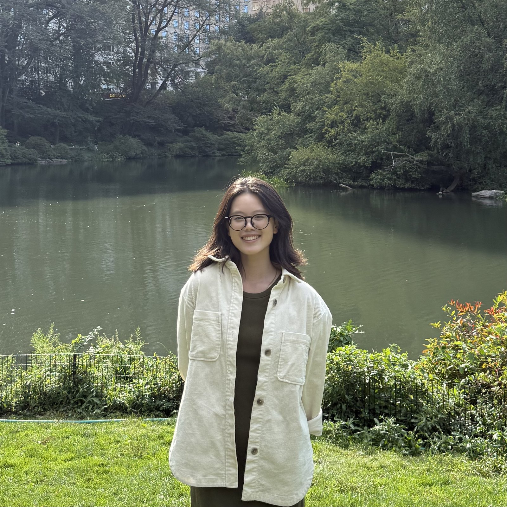

Hi! I'm Teresa : )
I am a Master's student in Computational Science and Engineering at Harvard University, conducting research in the Computation, Cognition, and Development Lab with Ilona Bass and Tomer Ullman. This past summer, I was also fortunate to work with Karla Perez, Hyo Gweon, and Robert Hawkins in the Social Learning Lab at Stanford.
Previously, I graduated from 🐻 UC Berkeley with a B.A. in Computer Science and a B.A. in Data Science with Honors, where I enjoyed teaching the Data Structures and Algorithms course (CS 61B) for seven wonderful semesters, including co-instructing the lab-based version of the course (CS 61BL) in Summer 2024. During my time at Berkeley, I also had the opportunity to conduct research in computing education with Lisa Yan.
Outside of academics, I like hanging out with my friends, listening to my comfort playlist, and exploring more creative hobbies.
Research interests
My research interests lie at the intersection of education, psychology, and AI. I am particularly interested in understanding how AI is shaping the mechanisms and impact of social interactions, both within education and beyond. I am also interested in developing interventions to support more inclusive and equitable learning experiences.